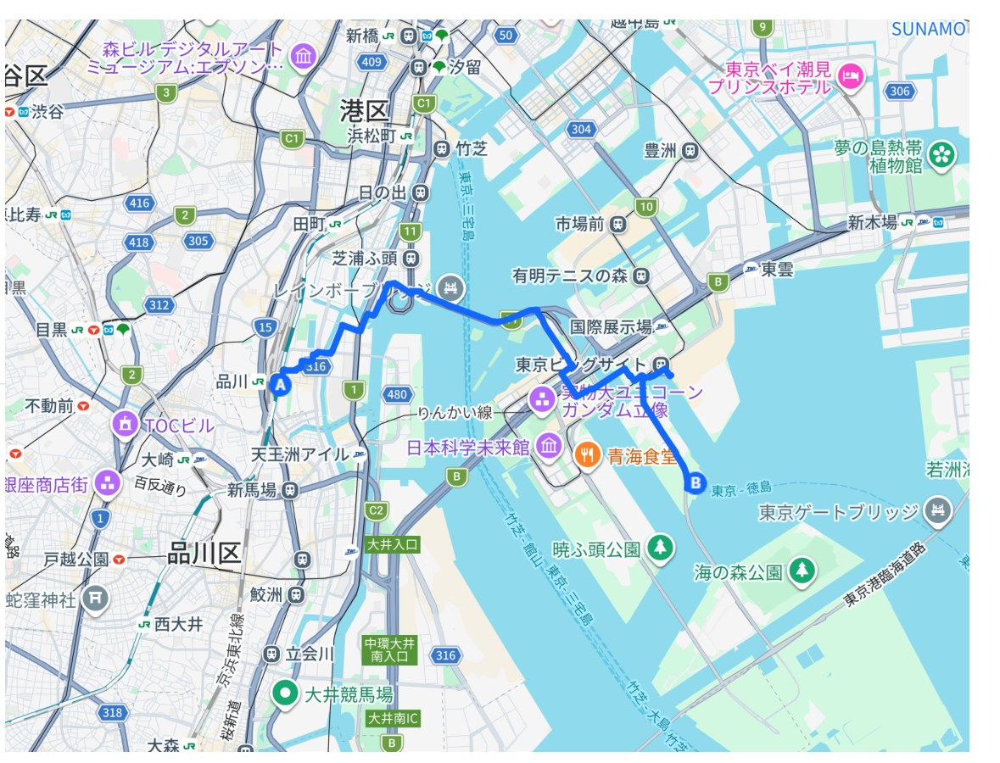
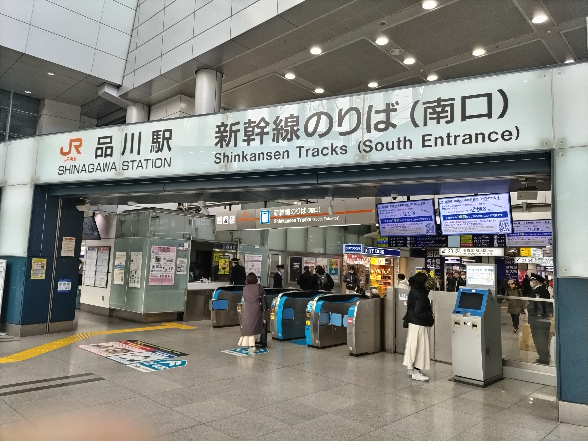
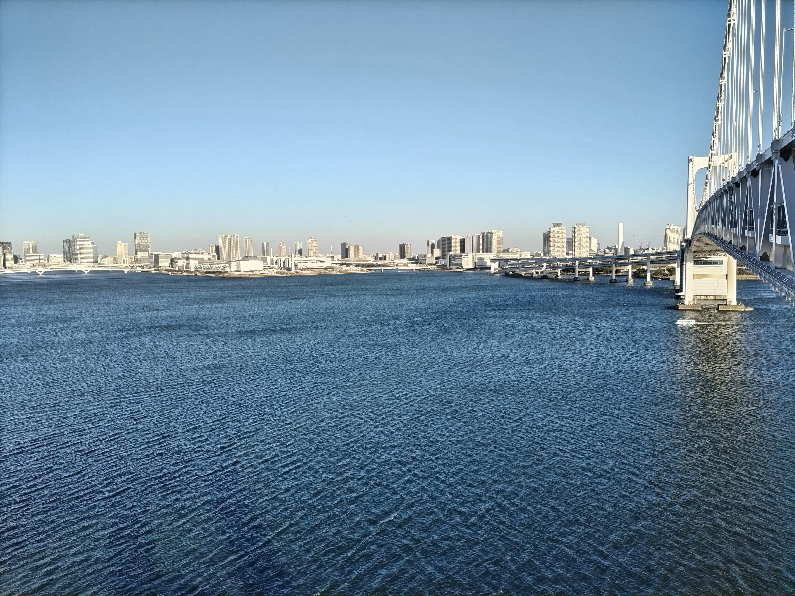
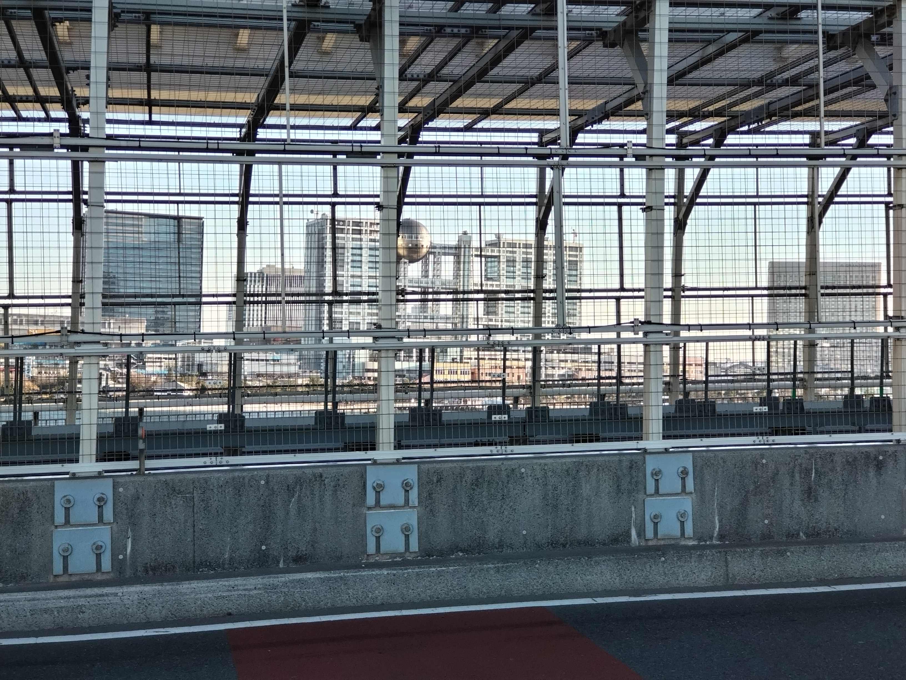
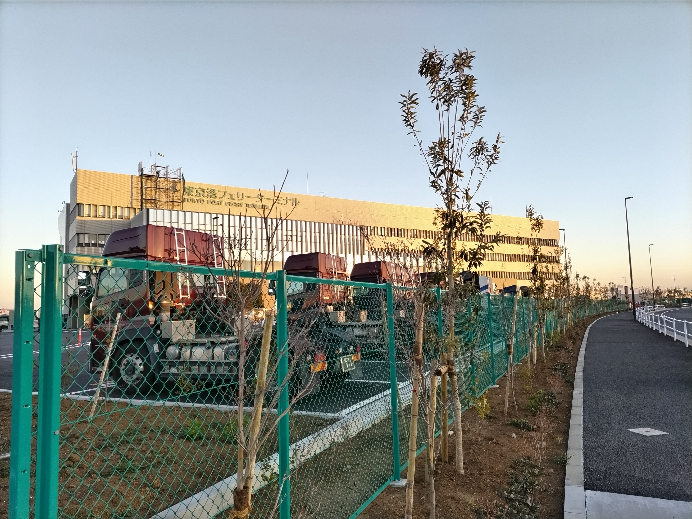
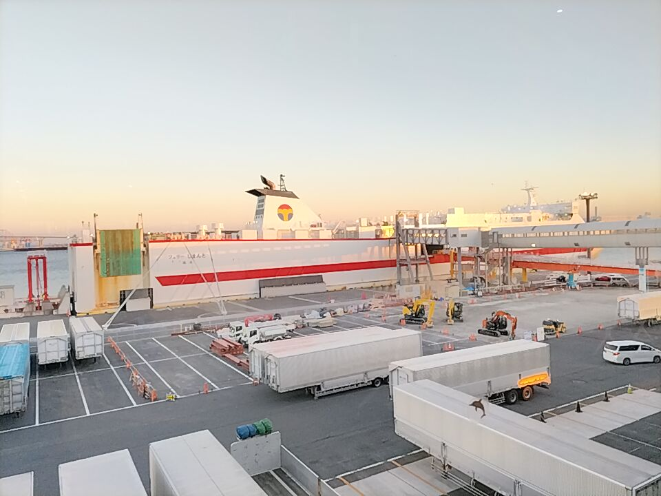
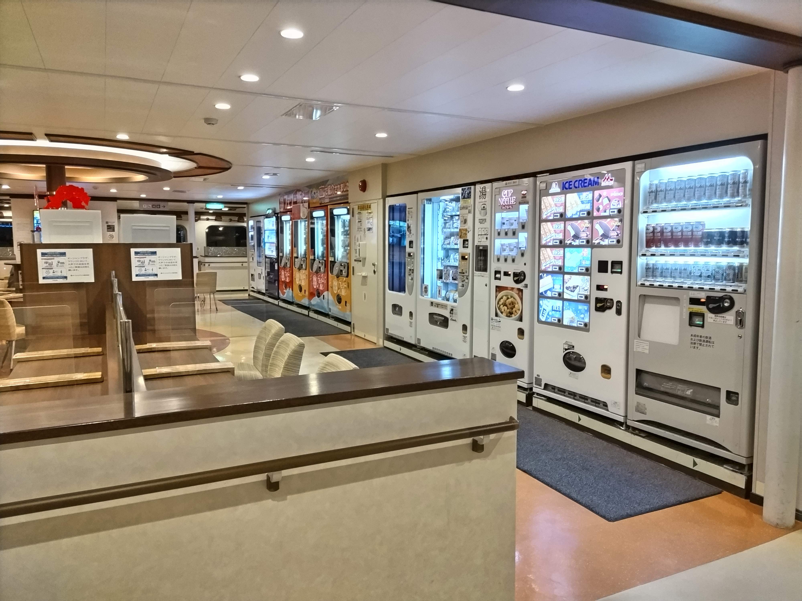
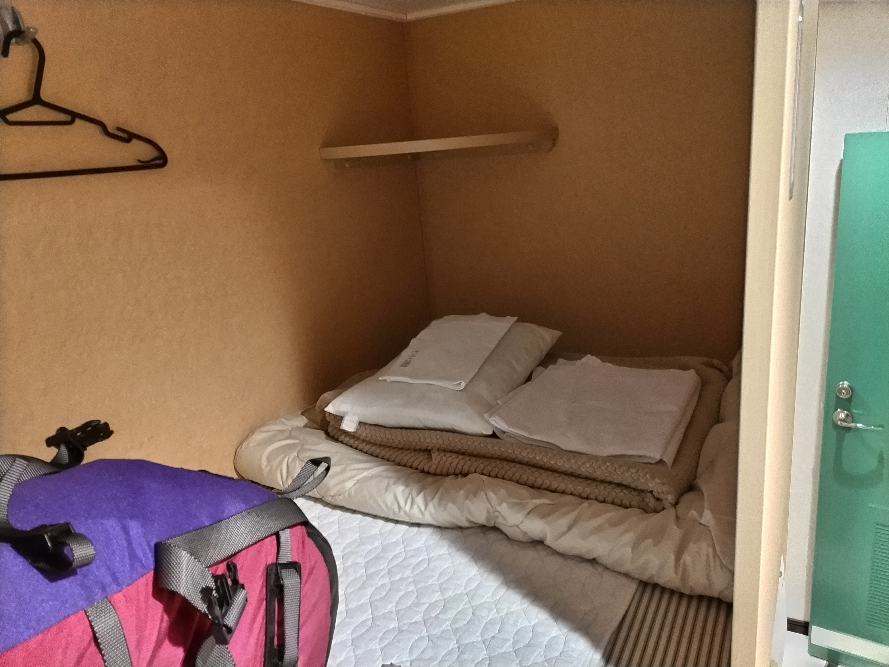
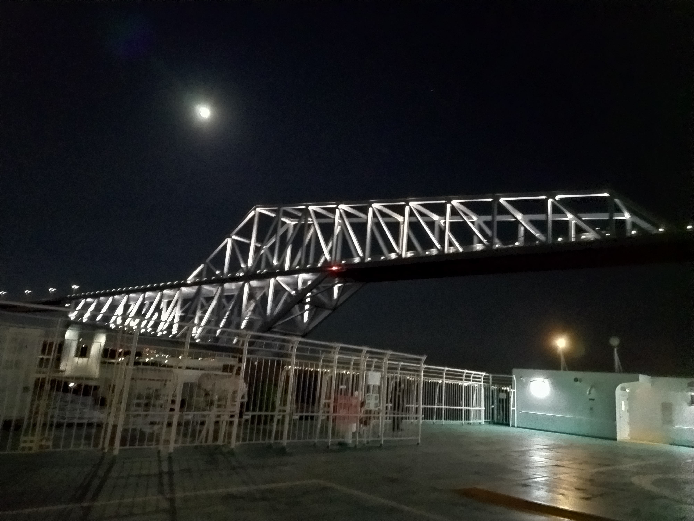

| 区切り | 第1回 第0日 |
| 日付 | 2025年2月11日 |
| 区間 | 品川駅 → 太平洋 |
| 歩行距離 | 約9 km |
| 札所 | －（四国上陸前） |

仏教徒でなければ旅人としてもルーキーである私がふと思い立って四国・徳島に向かう．普段使いのスニーカーを履き，おさがりのバックパックに買ったばかりの寝袋と着替えを詰めて品川駅へ．実家の地理的条件からアスファルトに足の裏を叩き続ける耐性と，ちょっとした階段や坂を登る脚力は備えていた．中長期的な問題に対して常に楽観的な私は，久しぶりの長めな外出に足を早めた．
卒業旅行としてお遍路旅に思い至ったのは1月の末，卒業制作が佳境を迎えたころであった．人生に一応の区切りがついたところで，ゆっくりとものを考える機会が必要であることを感じていた．一週間あまりの遍路区切り打ちの長さがあれば，一度頭を整理するには十分な時間が確保できるだろうという目論見であった．また，徒歩旅のもう一つの目的は自身の身体性と向き合うことであった．思想を・言語によって・観念的に・実体のない空間で・発することに，限界が来るのではないか．直接的な実世界への力学的作用（その最もわかりやすい例が，身体を自分の脚でもって長距離移動させることである）の試みによって考察する必要があった．
もしくは，近いうちに来るべきただぼんやりとした不安を予防したかったのかもしれない．
旅程は特に決めず，ただ徳島県内の全札所23寺か，遍路道の徳島県域踏破か，あわよくばそのまま南下して室戸岬を一目見られればというところであった．四国上陸までの便と初日の宿のみを確保，遍路用具は現地調達を計画，念のため納経の作法のみ予習．ここで，四国遍路について少し話しておくと，四国各地に広がる88の定められた札所（＝寺院）を巡り，各所で納経（読経，写経など）を行うというのが遍路である．（主に昔ながらの経路を）徒歩で巡るのが歩き遍路，通さずに複数回に分けて巡るのを区切り打ちという．したがって，今回の私の旅は，区切り打ちの歩き遍路ということになる．札所には番号が振られているが，一般的には任意の順序で巡るのでよく，移動手段も自由である．
さて，品川駅から新幹線……，には乗らず，東京港へ．初めての四国上陸に空路や鉄道で攻めるのはあまりにも味気なく，また，気持ちを整えるにも所要時間は長ければ長いほどよい．オーシャン東九フェリー乗り場へ，品川駅から徒歩で向かった．途中，書店でガイドブックを購入した．



品川駅からフェリー乗り場まで徒歩移動を選んだ意図はレインボーブリッジの徒歩通過を体験したかった他に，荷物の重さに慣れたかったというのもある．翌日から重量を増したバックパックを背負い，長距離を移動しなければならない．まずは短い距離で肩を慣らす必要があった．実際に日を重ねるにつれて肩の痛みは減少していったため，好判断であったといえるだろう．


オーシャン東九フェリーは東京と徳島・門司を約一日かけて結ぶ長距離フェリーである．東京を夜に出発すると午前中に徳島に到着．食堂は廃止されてしまったが，自販機でお弁当やおつまみ，お酒を購入して電子レンジで温めることができる．お遍路中は禁酒しようと出発前は考えていたが，乗船してすぐに撤回，結局遍路旅中も適度に飲酒の楽しみを享受した．最安の客室はプライベートが確保された個室型．名所の東京ゲートブリッジ通過を確認した後はガイドブックを開きながら Apple Music で般若心経をリピート．


